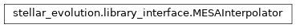
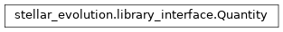
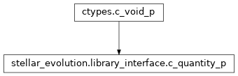

stellar_evolution.library_interface module¶
Class Inheritance Diagram¶
An interface to the POET stellar evolution interpolation utilities.
-
class
stellar_evolution.library_interface.MESAInterpolator(**kwargs)[source]¶ Bases:
objectA class for interpolating among a set of MESA tracks.
-
__call__(quantity, mass, feh)[source]¶ Return a stellar quantity interpolated to the given mass and [Fe/H].
- Parameters
quantity – A string identifying the quantity to interpolate. The following values are allowed: ‘radius’, ‘iconv’, ‘lum’, ‘irad’, ‘mrad’, ‘rrad’. This is a case insensitive argument.
mass – The mass of the star for which this quantity should be defined in solar masses.
feh – The [Fe/H] of the star for which this quantity should be defined.
- Returns
callable with an age parameter evaluating to the quantity at the given age.
- Return type
-
__init__(**kwargs)[source]¶ Prepare a MESA based interpolation.
- Parameters
mesa_dir – A directory contaning a grid (mass and metallicity) of MESA tracks to base the interpolation on. Must not be specified if interpolator_fname is.
smoothing – A numpy float array of the smoothing arguments to use for the interpolation of each quantity. Should be in the order defined by quantity_ids.
nodes – A numpy integer array of the nodes to use for the interpolation of each quantity. Same order as smoothing.
vs_log_age – A numpy boolean array indicating whether the interpolation for each quantity should be done vs log(age) instead of age.
log_quantity – A numpy boolean array indicating whether the interpolation for each quantity should be of log(quantity) instead of quantity.
interpolator_fname – The filename of a previously saved interpolator state. Must not be specified together with mesa_dir. If passed, the smoothing and nodes arguments are ignored.
num_threads – The number of simultaneous threads to use when constructing the interpolation.
Returns: None.
-
default_log_quantity= {'ICONV': 0, 'IRAD': 0, 'LUM': 0, 'MRAD': 0, 'RADIUS': 0, 'RRAD': 0}¶
-
default_nodes= {'ICONV': 3000, 'IRAD': 3000, 'LUM': 0, 'MRAD': 6000, 'RADIUS': 0, 'RRAD': 3000}¶
-
default_smoothing= {'ICONV': 5.0, 'IRAD': 6.0, 'LUM': nan, 'MRAD': 7.0, 'RADIUS': nan, 'RRAD': 6.0}¶
-
default_vs_log_age= {'ICONV': True, 'IRAD': True, 'LUM': True, 'MRAD': True, 'RADIUS': True, 'RRAD': True}¶
-
quantity_ids= {'ICONV': 1, 'IRAD': 3, 'LUM': 2, 'MRAD': 4, 'RADIUS': 0, 'RRAD': 5}¶
-
quantity_list= ['RADIUS', 'ICONV', 'LUM', 'IRAD', 'MRAD', 'RRAD']¶
-
quantity_names= {0: 'RADIUS', 1: 'ICONV', 2: 'LUM', 3: 'IRAD', 4: 'MRAD', 5: 'RRAD'}¶
-
-
class
stellar_evolution.library_interface.Quantity(underlying_quantity)[source]¶ Bases:
objectCallable that evaluates to the value of the quantity at a given age.
-
__call__(age)[source]¶ Evaluate the underlying quantity at the given age(s) (in Gyr).
- Parameters
age – Either a single float or a numpy array of floats giving the ages at which to evaluate the quantity.
- Returns
The value(s) of the quantity in the same format as age.
- Return type
type(age)
-
continuous_range(age)[source]¶ Return the range around age over which the quantity is continuous.
- Parameters
age (-) – The age around which the continuous region is required.
- Returns: A 2-tuple of the minimum and maximum ages surrounding age
over thich the quantity is guaranteed continuous
-
deriv(age)[source]¶ Return the 0-th, 1-st and 2-nd order derivatives of the quantity.
- Parameters
age (float or numpy array) – Either a single float or a numpy array of floats giving the ages at which to evaluate the quantity.
- Returns
Either 1-D (if age is a single float) or 2-D array if age is a numpy array where the outside (or only) index is the derivative order.
- Return type
numpy array
-
-
class
stellar_evolution.library_interface.c_interpolator_p[source]¶ Bases:
ctypes.c_void_p
Type corresponding to pointer to intepolator in the POET library.
-
class
stellar_evolution.library_interface.c_quantity_p[source]¶ Bases:
ctypes.c_void_pType corresponding to pointer to evolution quantities in POET library.
-
stellar_evolution.library_interface.initialize_library()[source]¶ Prepare the stellarEvolution library for use.
-
stellar_evolution.library_interface.library_track_fname(mass, feh)[source]¶ Returns the base name expected by library for a track.
- Parameters
mass – The mass of the star whose evolution is stored in the track.
feh – The [Fe/H] value of the star whose evolution is stored in the track.
- Returns
The base filename the stellar evolution library expects to be used for the given track.
- Return type